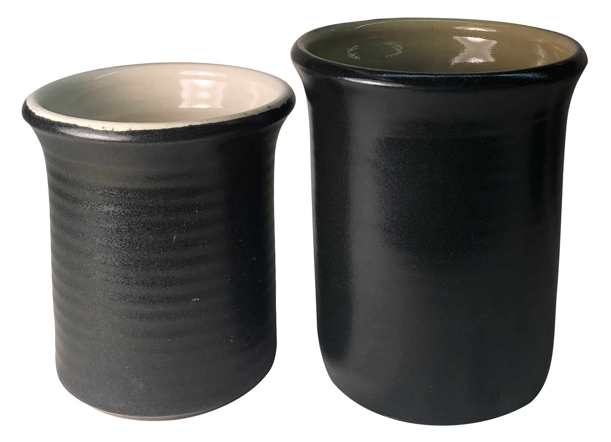
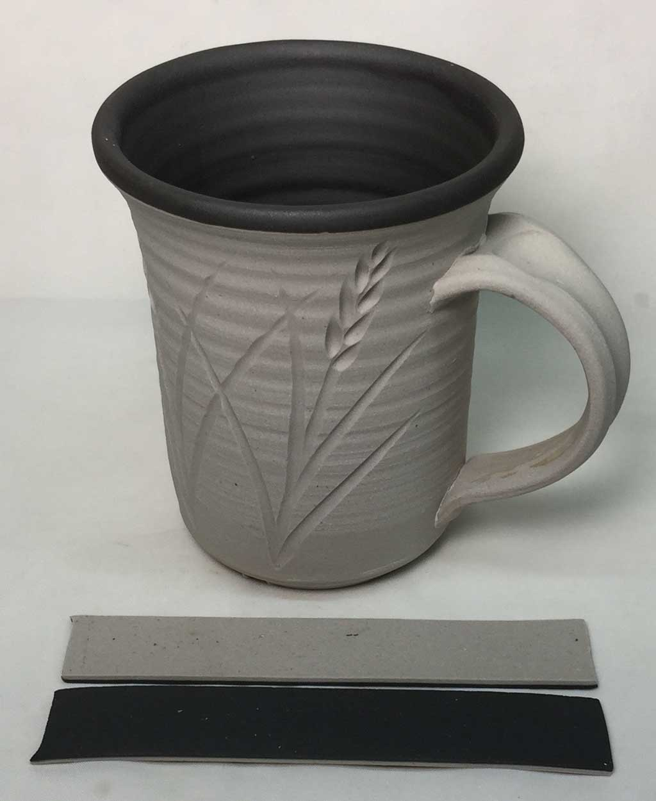
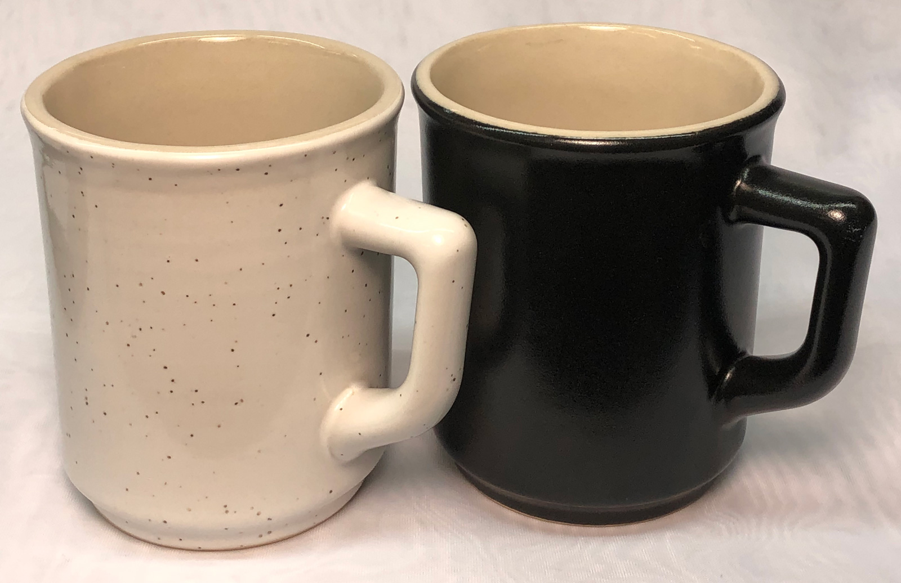

Notes
The Mason reference guides states that this "can be used as a 'body stain' in porcelain at high temperatures". However we find that it works well as a body and engobe stain at any temperature. They indicate a maximum firing limit 2300 degrees F (1260 degrees C) and that free zinc oxide influences the color more than any other element. They state that "generally, zincless glazes should not contain magnesium oxide". However the G2934 is a zinc-free high-MgO matte and this stain works very well, even at low percentages.
Old Number: 158
Related Information
Mason stains in the G2926B base glaze at cone 6

This picture has its own page with more detail, click here to see it.
This glaze, G2926B, is our main glossy base recipe. Stains are a much better choice for coloring it than raw metal oxides. Other than the great colors they produce here, there are a number of things worth noticing.
-Stains are potent; the percentages needed are normally much less than for metal oxides.
-Staining a transparent glaze produces a transparent color, it is more intense where the laydown is thicker - this is often desirable in highlighting contours and designs. For pastel shades, add an opacifier (e.g. 5-10% Zircopax, more stain might be needed to maintain the color intensity).
-The chrome-tin maroon 6006 does not develop well in this base (alternatives are G2916F or G1214M).
-The 6020 manganese alumina pink is also not developing here (it is a body stain).
-Caution is required with inclusion stains (like #6021). Bubbling, as is happening here, is common - this can be mitigated by adding 1-2% Zircopax.
-And it’s easy to turn any of these into brushing glazes or dipping glazes. Be sure to blender mix them to break up any agglomerates.
Tuning the degree of gloss on a matte black glaze:
It's about more than just surface character

This picture has its own page with more detail, click here to see it.
These 10-gram balls were fired and melted down onto a tile. The one on the left is the original G2934 Plainsman Cone 6 magnesia matte with 6% Mason 6600 black stain. It has been a little too matte (and thus cutlery marking). On the right, the adjustment has a 20% glossy G2926B glaze addition to make it less matte. Notice the increased flow (the ball has flattened more). In addition, while the percentage of stain in the one on the right is actually less, the color appears darker because the more homogeneous glass allows more light penetration and less scattering.
My goal in making it glossier was to make it less prone to cutlery marking. The marking does not happen because the glaze is soft, but because the metal is abraded by microscopic surface roughness. Interestingly, I recovered the degree of matteness by slowing the cooling cycle, letting the kiln create a truer surface texture instead of forcing it through chemistry alone.
Absolutely Jet-Black Cone 6 Engobe on M340
This could also be super white

This picture has its own page with more detail, click here to see it.
This is the L3954B engobe. 15% Mason 6600 black body stain has been added (instead of the normal 10% Zircopax used for white). Of course, a cover glaze is needed for a functional surface. A lot of development work went into producing a recipe that fits this body, M340. It works even when thickly applied because it has the same fired maturity as the body. Lots of information is available on using L3954B (including mixing and adjustment instructions). Engobes are tricky to use. Follow the links below to learn more. L3954B is designed to work on regular Plainsman M340 (this piece), M390 and Coffee Clay. Most importantly, adjusting its maturity, and thus reducing firing shrinkage, is documented. These bodies dry better than porcelains and are much less expensive, so coating them with an engobe to get a surface like this makes a lot of sense. Ed Phillipson discovered this 80 years ago, enabling selling pieces made from these clays as white hotelware.
Stunning black silky matte glaze at cone 6

This picture has its own page with more detail, click here to see it.
This contains 6% Mason 6600 black stain (Mason 6666 gives dark brown, don't use it). The base recipe, G2934, is an excellent balanced-chemistry host for a wide range of stains to produce equally stunning reds, yellows, oranges, etc. The fritted version of the recipe, G2934Y, provides an even better host. This glaze is affected by the clay it is on. The body on the right is highly vitreous, this has produced a finer texture that glistens in the light. The body on the left is a whiteware having 1% porosity (Plainsman M370). Firing schedule is also a factor, slower cooling will dull the color more. We use the PLC6DS firing schedule.
Make a black engobe to fit your stoneware perfectly

This picture has its own page with more detail, click here to see it.
This unglazed white stoneware mug has been fired to cone 10R (Plainsman H570, 0.5-1% porosity) to demonstrate the utility of a stained engobe, in this case L3954J. This recipe employs 10% Mason 6600. The firing schedule is C10RPL. Notice the EBCT test bars in front; I make these by sandwiching the body and the engobe together in a thin strip, they demonstrate engobe/body compatibility because differences in drying and fired shrinkage curl the bar (toward the one of higher shrinkage). Thus, the straighter the bars dry and fire, the better the engobe-body fit. This makes it practical to tune an engobe to fit any clay body (e.g. my regular L3954N engobe recipe for buff stoneware adjusts this to have a lower fired shrinkage). This is not something to ignore, engobes that don't "fit" can flake off or exhibit issues similar to glaze compression. An organized testing program is ideal to be able to use engobes. While stains are not common at this high of a temperature, my testing has shown good results on many colors. The Mason Colors data sheets show this stain (and their 6666 cobalt-free one) to be suitable as body stains up to 2300F (1260C) - cone 10 is technically a little above this limit but I have not encountered issues. Black engobe work very well at lower temperatures, e.g. my L3954B recipe.
A gunmetal glaze I have wanted for decades!

This picture has its own page with more detail, click here to see it.
I finally have a perfect functional, durable gunmetal black! It has an incredible silky surface. It does not cutlery mark. It does not craze on anything. It is easy to clean. This is G2934Y with 6% Mason 6600 black stain fired using the PLC6DS schedule. I had to tune it a bit, adding about 15% glossy G2926B, because it was a little too matte on initial firings. But now it is perfect. These are heavy mugs made using the M340 casting recipe L3798G (and the casting-jiggering process). The speckled mug was made by casting a thin layer of the speckled version of the slip first, then filling the mold with the regular slip. I used a 40-minute cast to get walls nice and thick!
Polar Ice Porcelain with Body Stains - by Robert Barritz

This picture has its own page with more detail, click here to see it.
Robert has done really valuable work in this research, what an amazing range of color! Surfaces are unpolished and unglazed. All are fired to cone 6. Browns are missing, they can be made using iron oxide. For blacks, Mason 6600 is also effective. The blues can be intense using lower percentages than shown here, as low as 2% can be effective. There is an optimal amount for each stain, beyond that, increases in percentage bring little increase in color intensity. There is another reason to keep stain percentages to a minimum: To reduce the impact on body maturity (and firing shrinkage). Blues, for example, can significantly heighten the degree of vitrification, even melting the porcelain. If you plan to marble different colors, keeping stain percentage as low as possible is even more important, unless you can do fired shrinkage compatibility testing, for example, the EBCT test. Need to develop your own white porcelain? See the link below.
Stains in bodies will usually bleed color into glazes used over them, especially if the body is vitreous. This can be leveraged to create or amplify variegation. Strangely, stains can increase micro bubbles in transparent glazes.
Links